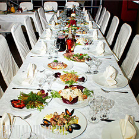

<div class="body">
    <div class="my-5 margin-x">
        <div class="flex">
            <div class="flex">
                <div class="" style="animation-delay: 0.5s; visibility: visible; animation-name: fadeInDown;">
                    <div class="text-center ">
                        <h1 class="text-lg-left" style="text-align: justify; animation-delay: 0.5s; visibility: visible; animation-name: fadeInUp;">
                            Funeral Dinner
                        </h1>
                        
                    </div>
                    <div>
                        <p style="text-align:justify;">
                            The Christian tradition of saying goodbye to the deceased regulates the holding of Memorial dinners, where relatives and friends can remember the deceased person. Commemorations are held on the day of funerals, on the 9th, 40th days and annually from
                            the day of burial. Quite often, such dinners are held at home. But, you must agree, on the day of farewell to the deceased and so many worries, and to spend such a day in the hustle and bustle and organization of lunch is not
                            quite right in relation to a person who has left this world. After all, the very idea of a memorial dinner is that friends and relatives have the opportunity to say goodbye to the deceased, share the burden of loss in a close
                            family circle, and remember happy and not so happy moments of life. And, of course, support the family that has the heaviest burden on its shoulders.
                        </p>
                        <p>
                            We understand how important it is to say goodbye to the deceased and help reduce the complexity of organizational events related to the wake.
                        </p>

                        <h2>
                            Our services include:
                        </h2>
                        <p>
                            CREATING A MENU. We will select together with you a list of dishes that do not violate Christian ethics and are affordable. Note that on the table must necessarily be: kutya (kolivo), Pies, first courses (most often, borscht), meat dishes (beef stroganoff,
                            chops, cutlets), side dishes (buckwheat porridge, potatoes).
                        </p>
                        <p>
                            CALCULATION OF PORTIONS. Without experience, it is quite difficult to assess the need for individual portions. We will tell you how not to make a mistake.
                        </p>
                        <p>
                            CALCULATION OF ALCOHOL. We often organize memorial dinners, which means we know exactly how to choose the right amount of alcohol. Note that it is mandatory to have Cahors wine on the table.
                        </p>
                        <p>
                            COOKING. Delicious and expertly served food from our chefs. Everything is prepared according to the rules of holding memorial dinners. Completion of the meal. Our waiters will help you collect the remaining dishes if necessary.
                        </p>
                        <p>
                            On Memorial Day, you should not waste time organizing a wake, worrying about whether the food will become better, or whether the menu is properly compiled. Give us the opportunity to free you from the routine and save time on saying goodbye to the deceased.
                        </p>
                        <a class="btn-h" mdbBtn [floating]=" true " size="lg " color="blue " [routerLink]="['/restaurant/funeral-menu']" mdbWavesEffect>
                            <mdb-icon fas icon="plane-departure"></mdb-icon>
                            Funeral Menu
                        </a>
                    </div>
                </div>
            </div>
        </div>
    </div>
</div>